Overlapping concepts: six choices
OPR-5 (ticket #91). For each point: today's screens, a proposal, what disappears and what changes on mobile. Each point ends with options. A is my recommendation and the others are real alternatives. You choose per point; nothing is built before you choose. Desktop and mobile use the same words throughout (see Words).
The desktop screenshots come from today's app on main (fe03be1c), rendered against the e2e fake server with made-up data.
The mobile app has no screenshot setup, so its screens here are drawn from the Flutter code and marked “Drawn”. Click a screenshot to enlarge it.
Words: one list for desktop and mobile
If all six recommendations are chosen, the UI uses these words and no others for these concepts. The server keeps its own names (project_id, task, session.list); only UI text changes.
| Word | Means | Replaces in the UI |
|---|---|---|
| Workspace | A folder with its board, sessions and settings | Project (desktop /projects, “New project”, Activity log “All projects”, mobile Profile › Projects) |
| Session | You talk with one employee in a workspace and steer it yourself | Quick task |
| Ticket | Work you hand off. It goes over the Board, gets a plan, runs and comes back for review | — |
| Run | One employee's work on a ticket, read-only. You open it from the ticket | Task run as a page of its own, “Run by Flux”, “Open task” |
| Inbox | The bell: everything that waits for you, in every workspace | — |
| Needs you | The Inbox rows that wait for your answer: question, approval, plan, review | “Needs decision” and “Ready for review” as separate groups |
| Queue | What one employee has to do, in order | The employee page's “Inbox” tab, mobile “At work for Flux” |
| Activity log | A technical log of deliveries, queue steps and run steps (Settings › Advanced) | — |
| My defaults | Your model, effort, mode and subagent model for what you start | Company default model, Workspace › Model & effort, “Employee's default”, “Owner's default” |
| Signed in on | The devices where you are signed in | The mobile account screen titled “Sessions”, the board-member sheet's “Sessions” |
| New session | Where you start a session or a ticket | The mobile tab “Chat” |
Working with an employee: four ways
Session, ticket, task run and quick task. On desktop, sessions and task runs share EmployeeChat. Could a task run become a read-only view of a session?
Now
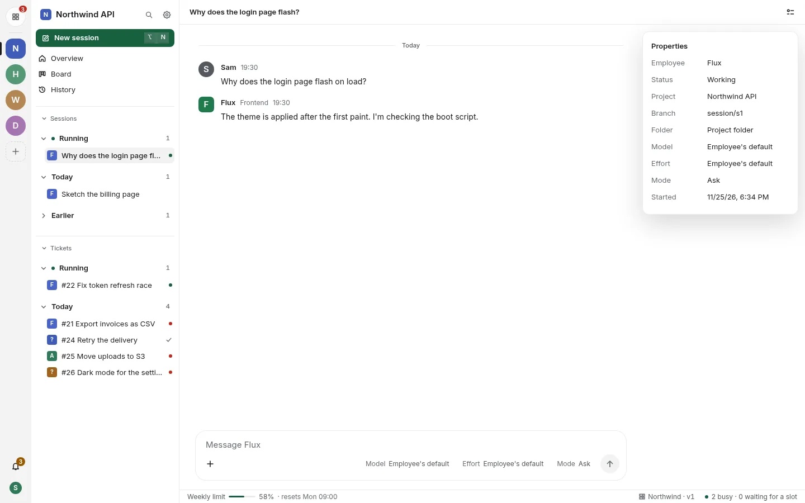
/session/$id: chat, composer with Model · Effort · Mode, Properties.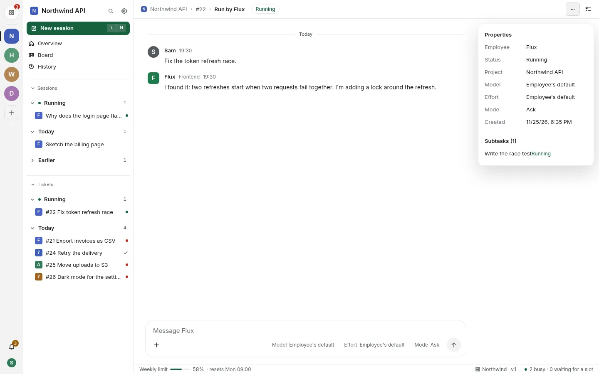
/tasks/$id: the same screen, with the head “Northwind API › #22 › Run by Flux” and a composer you can write in.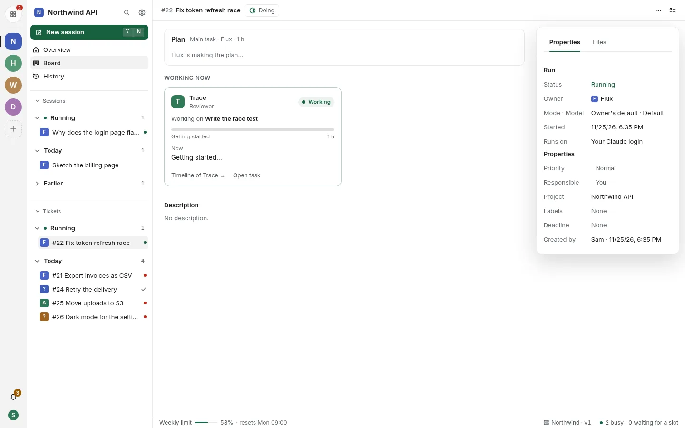
/ticket/22: Plan, one card per employee (“Open task” leads to the task run), properties.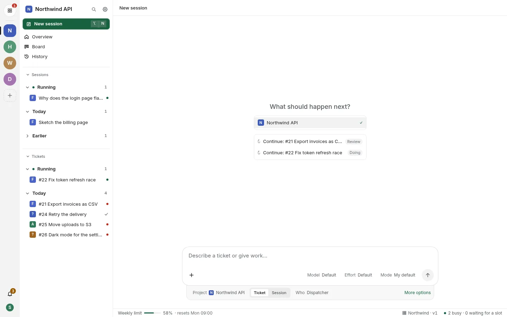
- Session: you start it and steer it. It has its own worktree (
session/…), and messages go in withchat.send. - Ticket: you hand off. The dispatcher or the owner plans and delegates. Board, Review, merge.
- Task run: the conversation of one task of a ticket (the main task or a delegated part). It looks like a session and you can type in it (
employee.send_message), so you can steer a part of a ticket past its owner. The plan, review and merge of that work belong to the ticket. - Quick task: a ticket kind (
kind: "quick") that starts at once and merges on “Approve and merge”. On a server withwork_sessionsit can no longer be made (quickCreatable). Old quick tickets only keep a “Quick” tag and a “Quick tasks” Board filter.
Proposal: two ways to work, and a run is a read-only view
There are only two ways to start work: Session (you talk and steer) and Ticket (you hand off). A run is not a third way. It is the read-only view of one employee's work inside a ticket: the same screen as a session, without the composer. You open it from its ticket, not from a list of its own.
refresh_race.test.ts next to the client tests.
- The header becomes “#22 › Trace's run” with a Read-only chip. The composer is replaced by one line and a Write in #22 button, which opens the ticket's discussion with the cursor in it.
- A question or approval the run asks is still answered right in the feed (the existing ApprovalCard and question form), so read-only never blocks the run.
- Stop run stays in the header. Cancel stays on the ticket's Activity card, where the owner sees it.
- On the ticket's Activity card, “Open task” becomes Open run.
Why read-only: a ticket has one owner who plans and delegates. Typing into a part bypasses that owner, and the plan no longer says what happens. In a session nobody else plans, so there you type.
The main task's run opens the same read-only way. The ticket page already shows its work (Plan, Activity, Timeline).
What disappears
- The composer on a task run (
employee.send_messagefrom that screen), with its Model, Effort and Mode chips. - The word “task” for this view: “Run by Flux” and “Open task” become “Trace's run” and “Open run”.
- Quick task in the UI: the “Quick tasks” Board filter, the “Quick” tag and the Quick task choice on old servers. Old quick tickets stay readable as normal tickets. Their “Approve and merge” stays while one is still open, because that merge is a server job (
ticket.quick_merge). - Nothing on the server:
quick_taskandemployee.send_messagestay in protocol 5.
Mobile
Write in #22
/project/:pid/task/:tid (task_page.dart) gets the same header, chip and line, and loses its text field. Drawn.
- New session already offers Session | Ticket on mobile. The Quick task choice and the “Quick tasks” filter chips (
lib/data/quick_task.dart) go, as on desktop. - “Open test task” on the ticket bar becomes Open run.
- The project page's Tasks tab goes (see point 3).
Choose for point 1
Seven places for “what needs attention”
The bell, toasts, the activity bar, Overview › Needs you/Running now, Settings › Activity log, the employee's Inbox tab (really its queue) and the ticket's Activity/Timeline. Which stay, and what does each one do?
Now
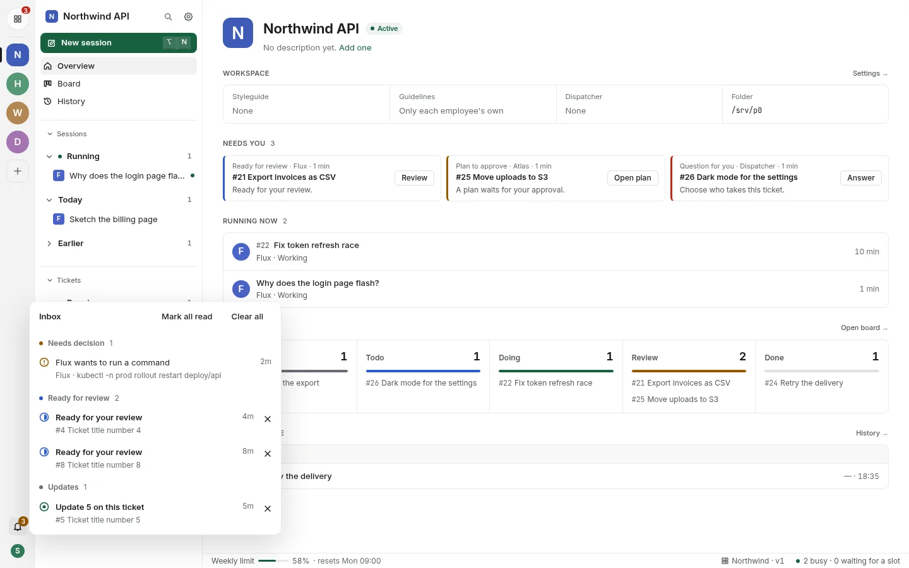
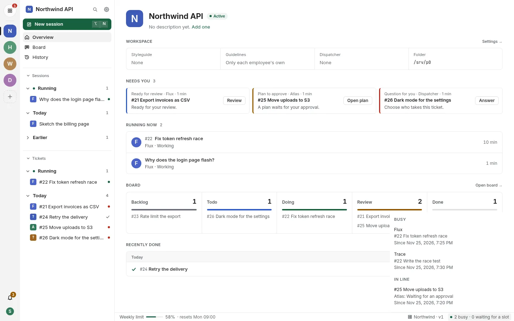
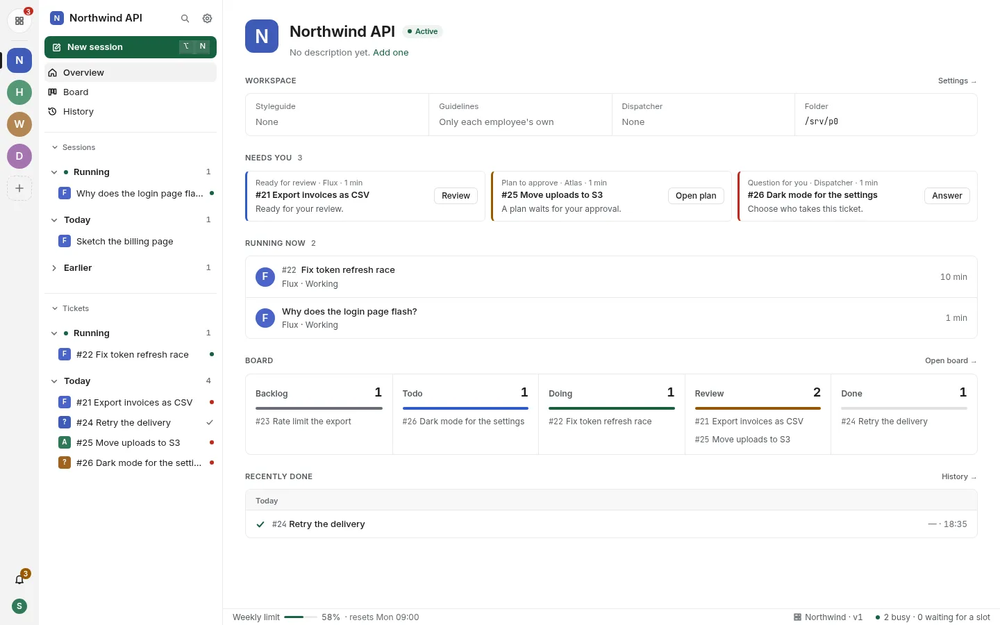
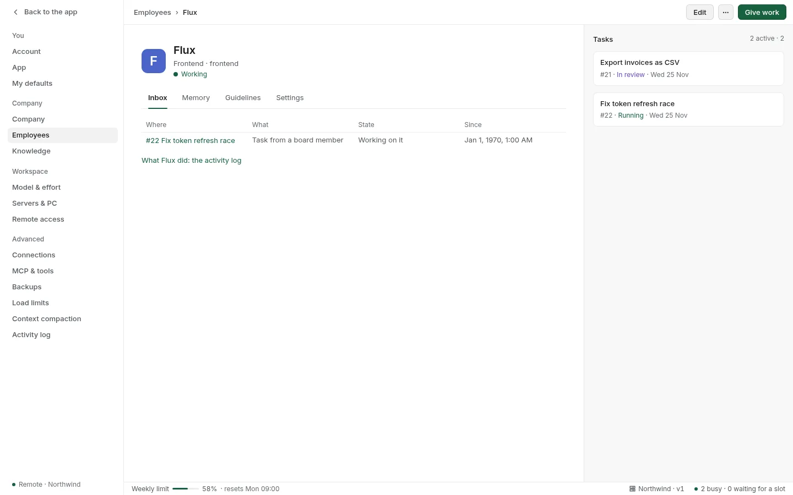
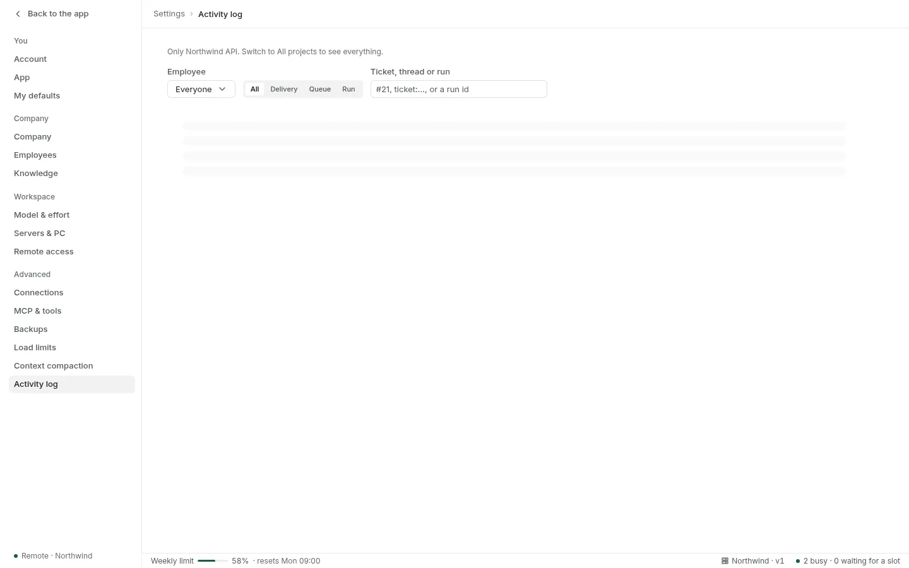
- Toasts (
useNoteToastsinframe.tsx): every new notification that is “yours” shows for a moment, at most 3 at once. Updates toast too, not only Needs you. - One review appears in five places: bell, toast, Overview › Needs you, the sidebar's red dot and the rail badge. That is fine as long as they are one list with the same words and the same order.
Proposal: one list (the Inbox) with views on it, and one job for each other place
| Place | Verdict | Its one job | Changes |
|---|---|---|---|
| Bell (Inbox) | Keep: the source | Everything that waits for you, in every workspace. The count is Needs you only. | Two groups: Needs you (question, approval, plan, review; oldest first) and Updates (not counted). “Needs decision” and “Ready for review” merge into Needs you, with the kind as a chip. |
| Toasts | Keep, narrower | Something new that needs you, while you are elsewhere. | Only new Needs-you rows and the result of your own action make a toast. Updates do not. Clicking a toast opens the same place as the bell row (rowPlace). |
| Activity bar | Keep, narrower | The machine: usage, server, “2 busy · 1 waiting for a slot”. | The popover keeps Busy and In line (slot, machine, limit, login, later). A wait on a person (approval, question, board member) leaves the list and shows as one line: “1 waits for you → Inbox”. |
| Overview › Needs you | Keep: a view | The Inbox's Needs-you rows of this workspace, as cards. | Same rows, order and words as the bell, so answering in one place clears the other. |
| Overview › Running now | Remove | — | The sidebar's Running groups (sessions and tickets) already show this per workspace, and the activity bar shows the count. |
| Settings › Activity log | Keep | Troubleshooting: why did something run, or not? | Never a badge or toast. Reached from a run's menu (“Activity log of this run”) and from the employee's Queue. “All projects” becomes “All workspaces”. |
| Employee › Inbox tab | Rename | What this employee has to do, in order. | The tab becomes Queue, so “Inbox” and “Needs you” only ever mean yours. |
| Ticket › Activity/Timeline | Keep | The story of one ticket. | No change. A question answered here also clears its Inbox row (already true: it is one record). |
What disappears
- Overview › Running now.
- Toasts for plain updates.
- Waits on a person (approval, question) as rows in the activity bar's popover.
- “Needs decision” and “Ready for review” as separate bell headings: they become one Needs you list with a kind chip.
- The word “Inbox” on the employee page.
Mobile
The Inbox tab is the bell: the same two groups and words. The tab badge counts Needs you. Drawn.
- Push notifications follow the toast rule: only new Needs-you rows. Updates stay quiet and only show in the Inbox.
- The Sessions tab's “working” badge plays the activity bar's role. The activity chip stays as it is.
- The employee page's “At work for Flux” list becomes Queue.
- The project page's Overview (point 3) shows Needs you as desktop does. Running now goes.
Choose for point 2
Overview vs Board vs History
Overview has its own board with 5 lanes and a “Recently done” list. Should it show counts plus links instead?
Now
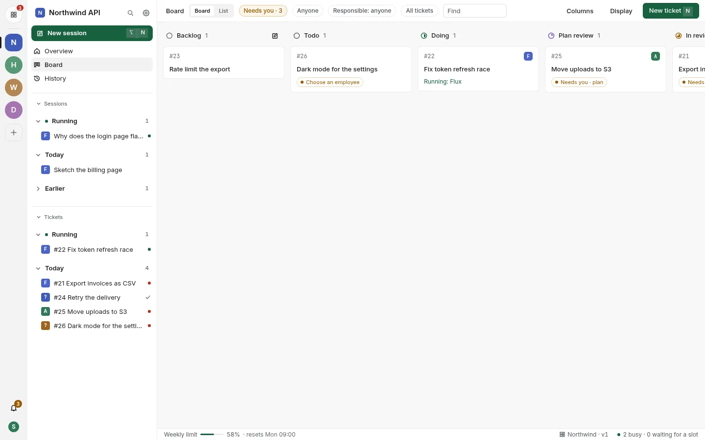
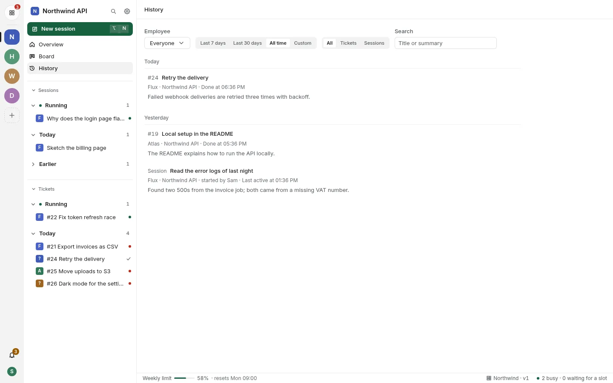
- The Overview lanes repeat the Board's ticket titles, but in 5 lanes instead of the Board's columns (no Plan review, no Testing). #25 sits under “Review” on the Overview and under “Plan review” on the Board.
- “Recently done” is the first rows of History.
- On mobile the project page has the tabs Overview | Board | Tasks, while
/boardredirects to the Sessions tab (“the Board is not on the phone”).
Proposal: Overview = how this workspace is doing; Board = working on tickets; History = the record
- Board becomes one row of counts, one per column the Board shows (so Plan review and Testing too, where a workspace has them). A count opens the Board filtered on that column, and “Done this week” opens History for the last 7 days.
- Recently done becomes Done this week: at most 3 rows with their summary, then “History →”.
- The header, Needs you (point 2), Designs and the Workspace card stay.
- Board and History do not change.
This also removes the mismatch between the Overview's 5 lanes and the Board's columns.
What disappears
- The ticket titles in the Overview's lanes (the 5-lane board strip).
- “Recently done” as a list by day: it is the first page of History.
- Overview › Running now (point 2).
- Mobile: the project page's Tasks tab.
Mobile
The segments are Overview | Board | History, the same three as the desktop sidebar. Tasks goes. Drawn.
- The mobile Overview uses the same blocks as desktop: Needs you, the Board counts and Done this week.
- A count opens the Board segment filtered on that column. The
/boardredirect to Sessions › Tickets stays for old links. - History on mobile is new, but it is only a list over
ticket.historyandwork_session.history, which already exist.
Choose for point 3
Three lists of workspaces
All workspaces, /projects and the rail. Should they merge into one?
Now
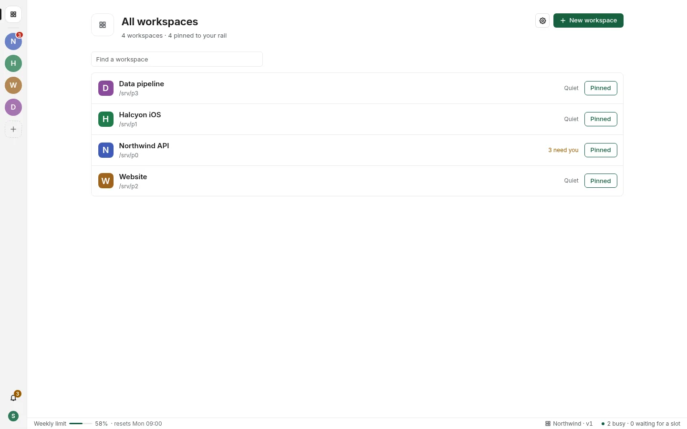
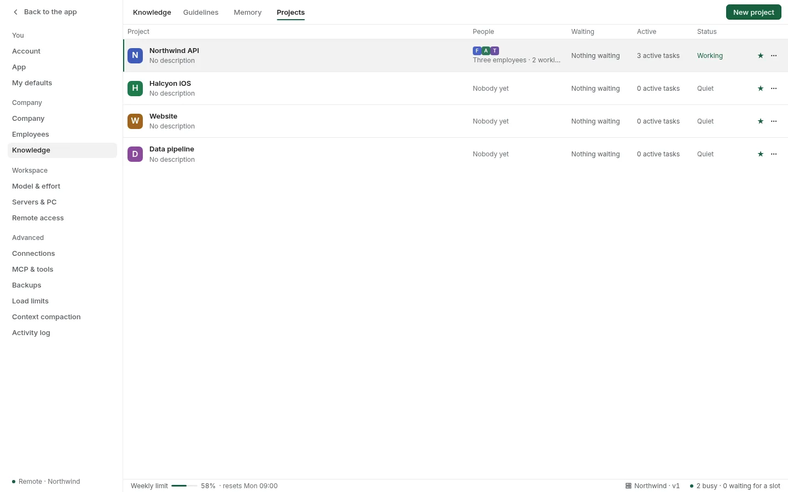
/projects under Settings › Knowledge › Projects: People, Waiting, Active, Status, ★ (= pin), ⋯ and New project.- One thing has two names: Workspace (rail, All workspaces, sidebar, Overview) and Project (
/projects, “New project”, Activity log “All projects”, mobile Profile › Projects and “New project”, the ticket property “Project”). - The ★ in
/projectsand “Pin to rail” in All workspaces do the same thing (user.rail_pins). /projectssits between the Knowledge tabs (Guidelines, Memory), where nobody looks for it.
Proposal: one list (All workspaces); the rail is your shortcuts
- All workspaces takes over what
/projectshad: who works there (after the folder), “N need you · N working” or Quiet, and the ⋯ menu (Settings, Archive). - The word is Workspace everywhere: “New workspace”, “All workspaces” in the Activity log filter, “Workspace” as the ticket property.
/projectsand/projects/$idredirect to All workspaces and to that workspace's settings, so old links keep working.
- The rail stays exactly as it is: your pinned workspaces, not a list of all of them.
What disappears
/projects(the table) and the Projects tab under Knowledge.- The ★, which is the same as Pin to rail.
- The word “Project” in the UI, on desktop and on mobile.
Mobile
Profile › Projects Workspaces: the same rows and words as All workspaces, without pins (the phone has no rail). Drawn.
ProjectsPagekeeps its route. Its title, the Profile row, “No projects yet” and “New project” switch to the workspace words.- The project page's back link and the ticket's “Project” row say Workspace.
- The empty Board text “Create a project first; work is done in a project.” becomes “Create a workspace first.”
Choose for point 4
/projects, the rail stays, and “Workspace” is used on both clients. Recommended/projects out of Knowledge and drop the ★.Choosing the model in three places
Company default model (old servers), Workspace › Model & effort (now a stub) and My defaults, on desktop and mobile.
Now
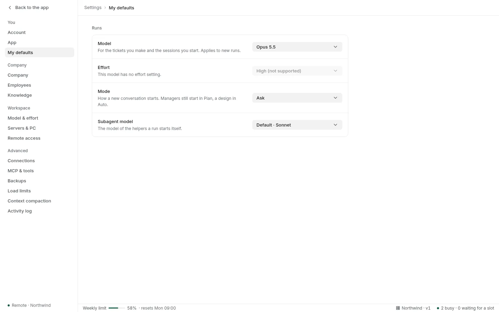
user_run_defaults.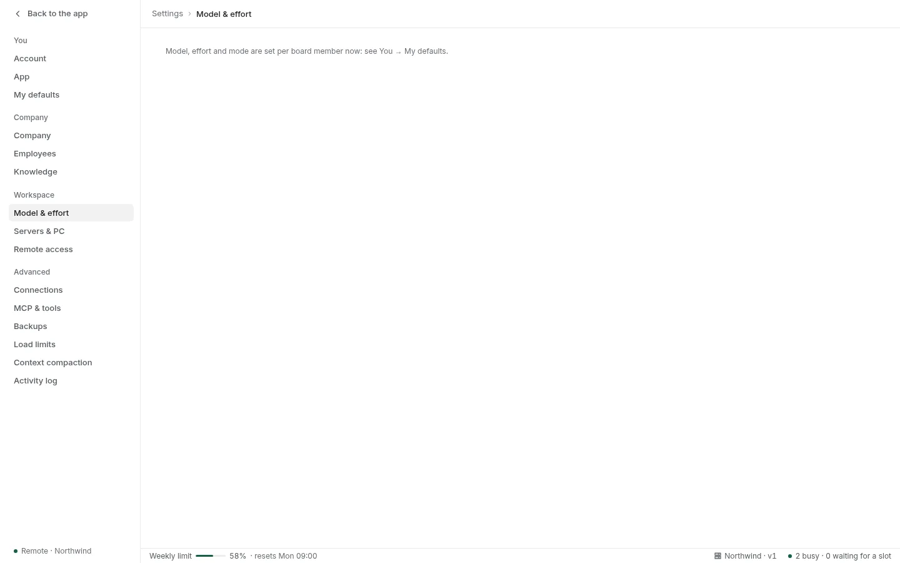
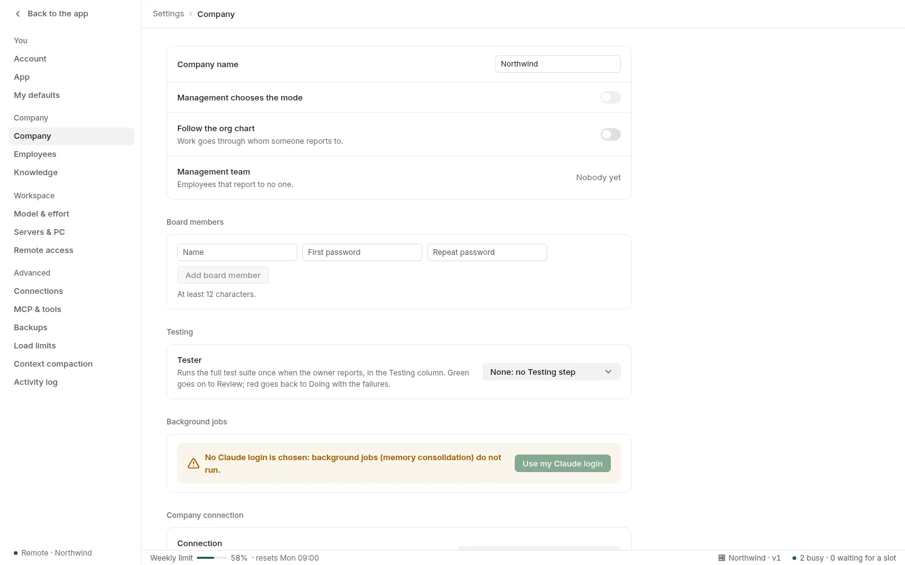
user_run_defaults this also shows “Employee default model” and the subagent default. On a new server it shows only the connection.- Since 2026-11-25 the default model, effort and mode come from the board member who starts the work (the ticket's creator or the session's starter), not from the employee or the workspace.
- Mobile has the same places: Profile › My defaults (new servers) or Model & effort · Per employee (old servers), the employee page's “Model and effort” and “Subagents” rows (old servers), and the chips in New session, in a session and on the ticket bar (“Model · …”).
Proposal: one setting (My defaults) and one way to override it (the chips)
- Settings › You › My defaults is the only setting. It already has Model, Effort, Mode and Subagent model. Every chip's menu links to it with “Change my defaults”.
- Every chip and property uses one label: Your default · Opus 5.5. When another board member started the work, it says Kim's default · …, because their default is the one that applies.
- A value chosen for this run shows as just the value (“Sonnet 5.5”), and the chip's menu starts with “Use your default”.
- On an old server (no
user_run_defaults) the old places still show, because they are real there. Clients hide what a server lacks, so nothing changes for them.
What disappears
- Settings › Workspace › Model & effort on a new server (the stub). The section shows only on an old server.
- The labels “Employee's default” and “Owner's default”, and a bare “Default”, for model and effort.
- Mobile: on a new server the Profile row “Model & effort · Per employee” and the employee page's “Model and effort”. Both already hide there; this makes it the rule.
Mobile
For the tickets you make and the sessions you start. Applies to new runs.
Already exists (my_defaults_page.dart) and stays the only setting. Drawn.
The same chip label in a session, in New session and on the ticket bar (chat_view.dart, ticket_gate.dart, ticket_properties.dart). Drawn.
Choose for point 5
Two mobile screens called “Sessions”
The Sessions tab (work sessions and tickets) and the account screen that lists where you are signed in. OPR-2 already renamed the account screen's class to SignedInPage, with the title “Signed in on”.
Now
The Sessions tab (WorkSessionsPage) with Sessions | Tickets. The first tab is called Chat but opens New session. Drawn.
On main, the Profile row “Signed in on” opens a screen titled “Sessions” (account.dart:559). The board-member sheet in onboarding also says “Sessions”. Drawn.
- Desktop calls this group Signed in on (Settings › Account), and the mobile Profile row already says “Signed in on”.
- Desktop calls the start screen New session. Mobile calls the same screen “Chat”.
- The desktop sidebar has a Sessions and a Tickets section, so the tab's Sessions | Tickets switch already matches it.
Proposal: “Session” only means a work session; the account screen is “Signed in on”
The tab stays Sessions (Sessions | Tickets, as in the desktop sidebar). The first tab becomes New session. Drawn.
SignedInPage with the title Signed in on (OPR-2). The board-member sheet says “Signed in on” too. Drawn.
- The “Sessions” item in the onboarding/board-member sheet becomes Signed in on (
onboarding.dart:405). - The first tab's label becomes New session (icon ＋), the same as the first row of the desktop sidebar. The
/chatroute stays. - Desktop needs nothing: it already uses “Signed in on” and “New session”.
- “Sessions” as a title for signed-in devices, anywhere.
- “Chat” as the name of the New session tab.
Choose for point 6
Your choices at a glance
| # | Point | A (recommended) | What it takes to build |
|---|---|---|---|
| 1 | Four ways to work | Two ways (Session, Ticket). A run is read-only and opens from its ticket. Quick task leaves the UI. | Desktop task-run.tsx and mobile task_page.dart: the read-only line replaces the composer. Quick-task UI goes (quick-logic.ts, lib/data/quick_task.dart). No server change. |
| 2 | Needs attention | One Inbox with views. Running now goes, the employee tab becomes Queue, and toasts and push are for Needs you only. | Desktop: inbox-bell, the toasts in frame.tsx, activity-bar, overview, employee-inbox. Mobile: inbox groups, push filter, employee page. No server change. |
| 3 | Overview, Board, History | Board counts and Done this week on the Overview. Mobile: Overview | Board | History. | Desktop overview.tsx. Mobile project page plus a History segment over existing reads. |
| 4 | Workspace lists | All workspaces absorbs /projects, the rail stays, and “Workspace” is the only word. | Desktop: projects.tsx becomes a redirect, and the All workspaces rows in overview.tsx gain the extra columns. Mobile: words in projects_page, Profile and Board. No server change. |
| 5 | Model choice | My defaults is the only setting, every label says “Your default · Opus 5.5”, and the stub goes on new servers. | Desktop settings.tsx, session.tsx, new-session.tsx, ticket properties. Mobile chat_view, ticket_gate, ticket_properties. Uses the existing user.run_defaults. |
| 6 | Two “Sessions” | “Signed in on” everywhere, and the first mobile tab is New session. | Mobile: the label in shell.dart and onboarding.dart, on top of OPR-2's rename. |
Every option A leaves protocol 5 as it is: no method, field or migration changes. Old links (/projects, /tasks/$id, /chat, ?tab=discussion) keep resolving.